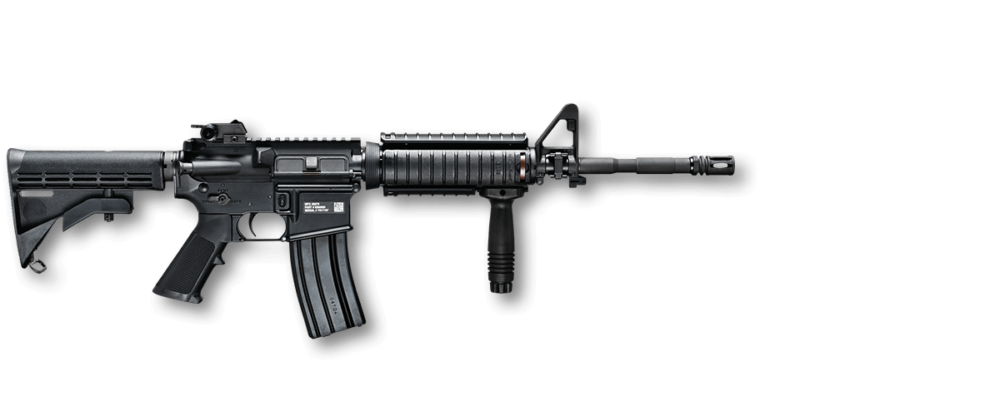

REC7

The REC7 is Barrett’s second AR-pattern rifle chambered for the 6.8mm Remington SPC cartridge, the first being the Barrett M468 rifle. The 6.8 SPC-chambered M468 rifle employed the same direct gas-impingement system as the M4. The result was a system that jetted hot gases directly into the rifle’s receiver, leading to potential stoppages if regular maintenance and cleaning protocols were overlooked. To enhance potential mechanical reliability, Barrett incorporated a short-stroke, piston-driven system that offers the potential for cleaner and cooler operation than one with direct gas-impingement. Barrett is still selling its limited stock of the M468 but only as an upper receiver kit and not as a complete rifle.
m4a1.
The Army is issuing Soldiers a new small arms 5.56 ammunition magazine designed expressly for the M4/M4A1 carbine and M16 family of weapons. The 2nd Battalion, 75th Ranger Regiment from Joint Base Lewis-McChord, WA, was the first unit to receive the new "Enhanced Performance Magazine (EPM), as free issue In July," said Anthony Cautero, Assistant Product Manager for the M4/M4A1 Carbine.
ak47

Almost from the moment of its official adoption by the Soviet military in 1949, the AK-47 was recognized as being simple to operate, rugged, reliable under trying conditions, and amenable to mass production. Built around a 7.62-mm round with a muzzle velocity of some 700 metres per second, it had a cyclic firing rate of 600 rounds per minute and was capable of both semiautomatic and automatic fire. A long curved box magazine held 30 rounds, and a separate gas-return tube above the barrel held a piston that was forced back upon firing to activate the mechanisms that ejected the spent cartridge and cocked the hammer for the next round. The AK-47 was manufactured in two basic designs, one with a wooden stock and the other, designated the AKS, with a folding metal stock. Beginning in 1959, the AK-47 was replaced in first-line Soviet service by the AKM, a modernized version fitted with longer-range sights and cheaper mass-produced parts, including a stamped sheet-metal receiver and a plywood buttstock and forward grip.